What is Natural Language Processing (NLP)?
NLP is the ability of a computer program to understand human language as it is spoken and written - referred to as natural language.

What is Natural Language Processing (NLP) Used For?
Machine translation
Grammatical error correction
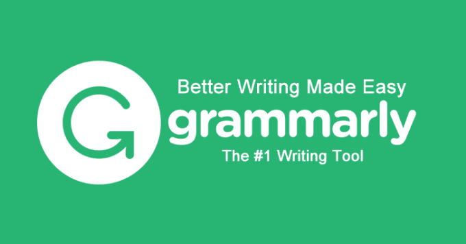
Text generation
Sentiment analysis
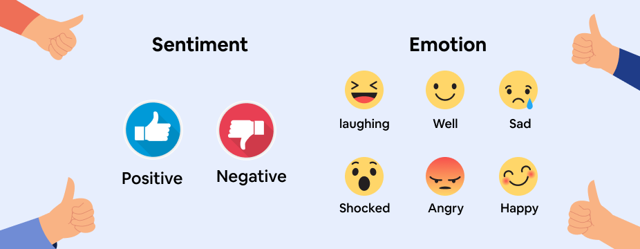
How does natural language processing work?
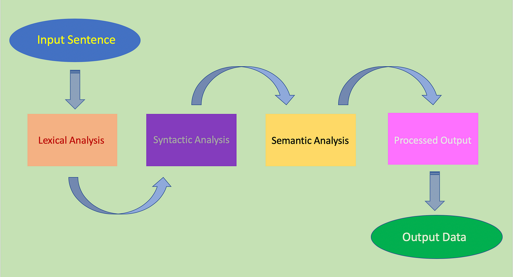
1. Install the library
npm i @nlpjs/basic
2. Create the code
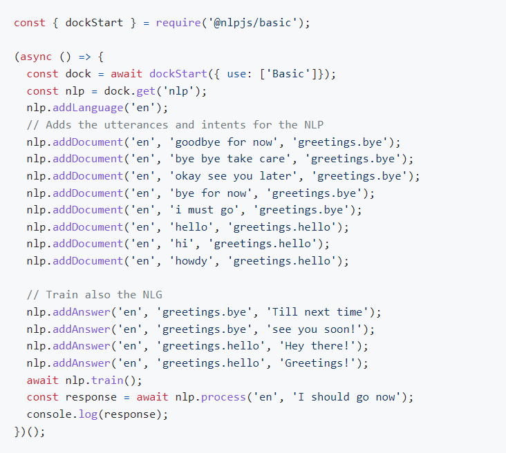
3. Extracting the corpus into a file
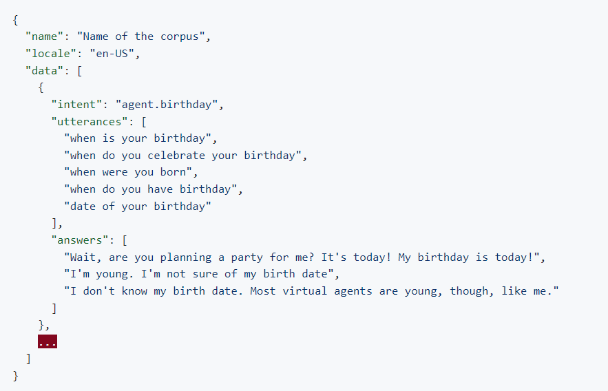
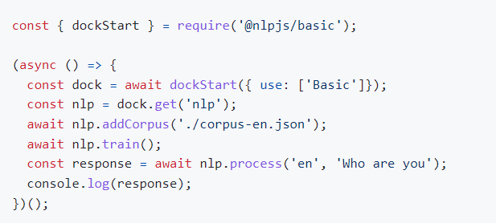
4. Extracting the configuration into a file
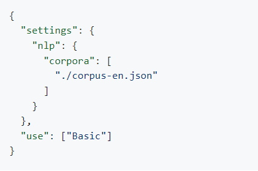
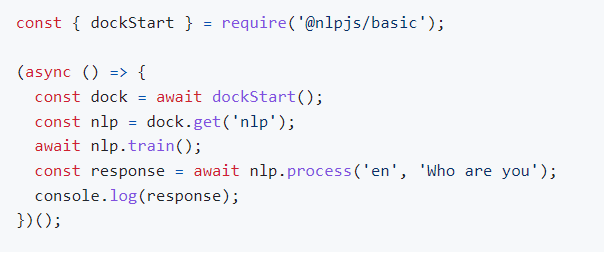
5. Creating your first pipeline
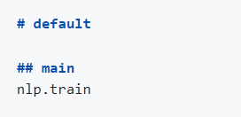
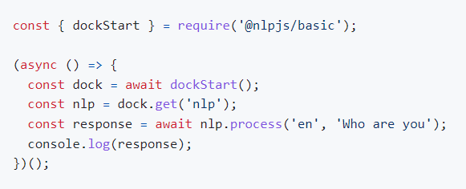
6. Adding your first connector
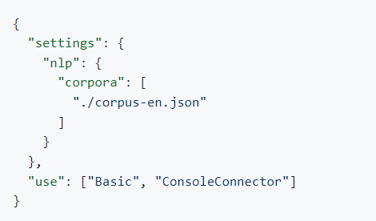
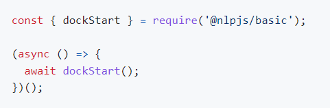
7. Adding Multilanguage
npm i @nlpjs/lang-es
8. Adding API and WebChat
npm i @nlpjs/express-api-server
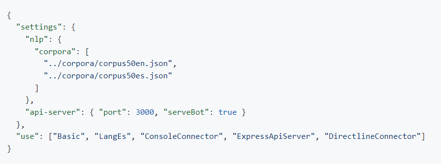the Directline Connector
npm i @nlpjs/directline-connector
Restart your application and navigate once more to http://localhost:3000 and you'll be able to chat with your bot.